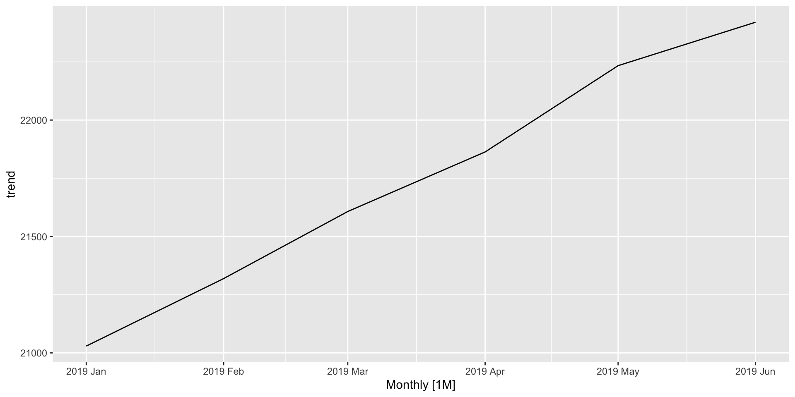
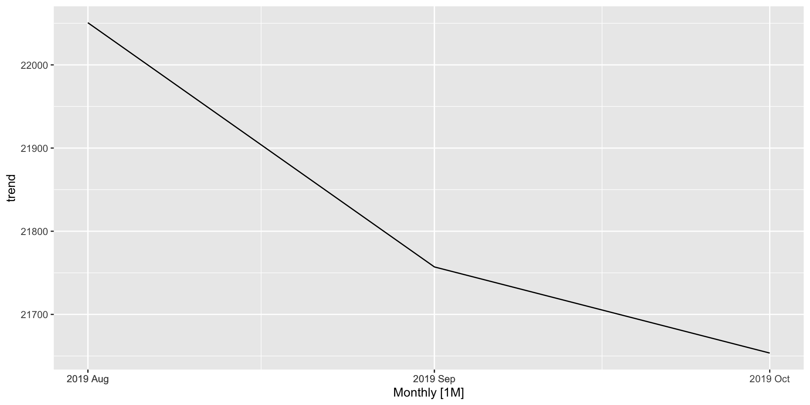
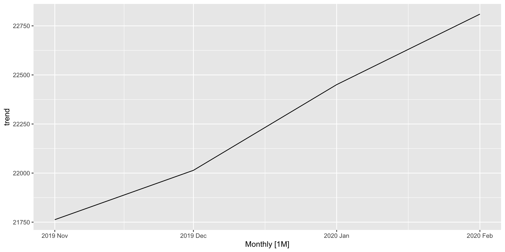
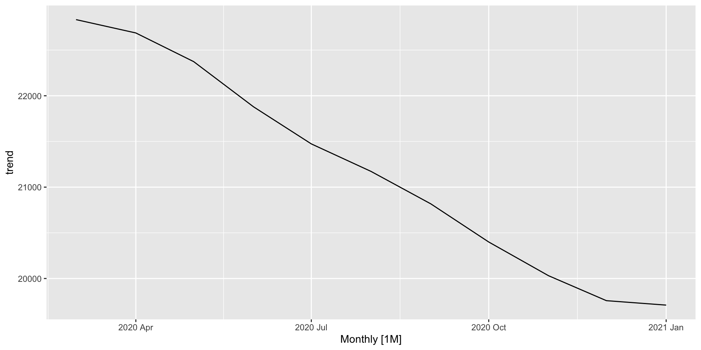
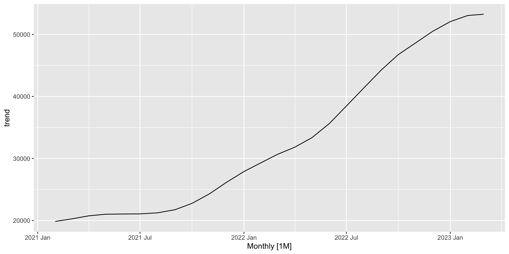
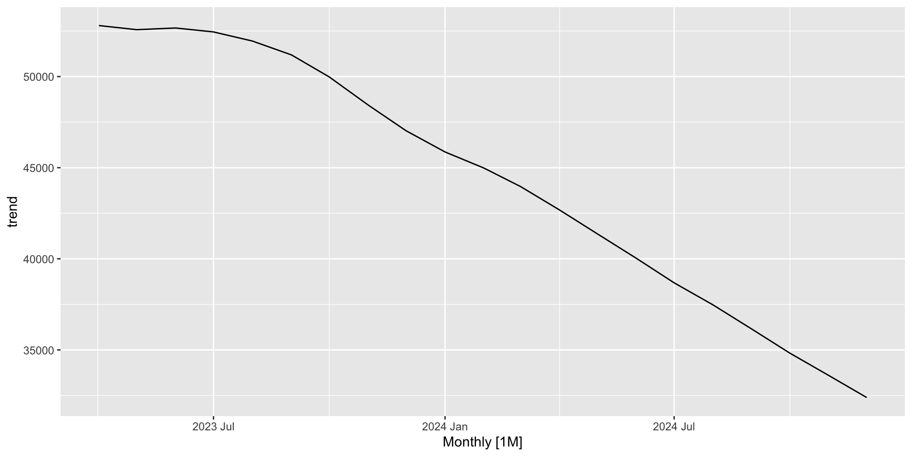

Feature insights into Somalia’s severe acute malnutrition admissions
A time series analysis spanning from January 2019 to November 2024
Author
Tomás Zaba
Published
January 11, 2025
Context
Seasonality significantly impacts the underlying and immediate factors contributing to acute malnutrition (AMN). It refers to recurring patterns within a year (Cowpertwait and Metcalfe 2009), such as specific months or quarters when AMN cases rise or fall.
Understanding the seasonal variation of AMN is crucial for evidence-based decision-making. However, despite a general awareness of its seasonality, limited evidence exists to substantiate it. Consequently, stakeholders often rely on assumptions of a seasonal peak during the food security lean season (Venkat et al. 2023). To account for this, nutrition surveys are routinely timed to coincide with the lean season each year.
The limited understanding of AMN’s seasonal variation is attributed to two key challenges: (i) the availability of robust analytical methods and (ii) access to primary data (Venkat et al. 2023). These challenges, however, can be mitigated by leveraging high-quality secondary data, such as survey datasets or treatment program admissions. Studies using 15 years of SMART survey data from African drylands have underscored the complex relationship between AMN and acute food insecurity, revealing that they do not always align across seasons or livelihoods (Venkat et al. 2023; Marshak et al. 2021). Notably, this research identified two AMN seasonal peaks: April-May and August-September (Venkat et al. 2023).
In Somalia, the seasonality of AMN is also generaly associated with that of the food security seasonality. There are five defined food security seasons as described by Luc et al. (2024):
gantt
title Somalia Food Security Seasonal Calendar
dateFormat M
axisFormat %b
todayMarker off
section Seasons
Jilaal :1, 4
Gu :4, 7
Post-Gu:7, 8
Hagaa :7, 10
Deyr :10, 12
Source: author’s adaptation
Jilaal: the most extended dry season, is characterized by livestock migration and decreased milk production in the pastoralist livelihoods.
Gu: characterized by heavy rainfall, it constitutes Somalia’s 70% of the crop production season, and livestock production depends upon this season.
Post-Gu: characterized by increase pasture and water availability for the livestock and increased availability of milk, fruits, vegetables. This is as well the peak season of a liquid butter made of milk know as ghee.
Hagaa: a dry season, characterized by light rainfalls.
Deyr: a rainy season, however localized and less reliable.
It is generally assumed that AMN in Somalia peaks from the end of the Jilaal season to the end of the Hagaa season. An analysis by Luc et al. (2024), based on SMART surveys conducted by the Food Security and Nutrition Analysis Unit (FSNAU) and partners, with data collected between the Gu and Deyr seasons from 2014 to 2021, identified two distinct seasonal peaks: May/June (the beginning of Gu) and November (mid-Deyr), with a decline during the lean season. The study also highlighted variations in these patterns based on livelihood zones, including pastoralist, agro-pastoralist, and riverine/farming communities:
Among pastoralist communities, the peak in AMN was observed in June (Gu). This does not align with the food security lean season, as pastoral consumption typically improves starting in April when animals give birth, coinciding with the onset of rainfall. During this period, households gain access to milk and meat and income from the sale of animals. A second peak was noted in November, a period when food insecurity is generally expected to be minimal following the Gu harvest (Luc et al. 2024).
In agropastoralist and farming areas, the seasonality followed the peaks described above (Luc et al. 2024).
What does this analysis add?
This analysis examines six years of severe acute malnutrition (SAM) admission data from treatment programs in Somalia to explore patterns in admissions, focusing on trends and seasonality over time.
Objectives
Identify and describe trend patterns: a long-term direction or movement in the admissions that persists across the series. This represents underlying patterns in the admissions after removing short-term fluctuations.
Identify and describe the seasonality patterns: recurring patterns that occur in a fixed and specific period every year.
Quantify the seasonal influences on the admissions: the extent to which different times of the year impact the number of SAM cases admitted into the treatment program
Methods
Data source
The analysis used the Somalia Nutrition Cluster’s six years of countrywide data on SAM admission into AMN treatment program. The data is reported monthly at district level.
Initially, the analysis was intended to use data on global acute malnutrition data. However, based on the advice from the Nutrition Cluster advised, moderate acute malnutrition (MAM) was excluded. Unlike SAM data, MAM data is affected by frequent stockouts of read-to-use supplementary food (RUSF), leading to unstable variance. Including this data could result in misleading findings.
Data wrangling
It consisted in excluding districts with missing admissions from January to December; then by aggregating the sum of the total number of children admitted by month at national level and by livelihood systems (Pastoral, Agropastoral, Riverine and Urban/IDPs).
flowchart LR
A[(Dataset)]
B[Exclusion of districts with consistent missingness of admissions data]
C[Summarise admissions by **month** at national level]
D[Summarise admissions by **month** by livelihood systems]
E[Time series]
F([National])
G([By Livelihood systems])
A --> B --> C --> E
B --> D --> E
E --> F
E --> G
Data wrangling workflow
Note
Eight districts were excluded for missingness: Ceel Dheere, Jalalaqsi, Jamaame, Kurtunwaarey Sablaale, Adan Yabaal, Bu’aale, Jilib, Saakow/Salagle, Sheik, Cadale, and Xarardheere.
Analysis approach
The data was first explored visually through graphs to identify patterns over time. It was then broken down into components to examine the overall trend and seasonal variations. The average rate of change was calculated to better understand the trend. To account for the different livelihood systems within Somalia, the data was split into four separate time series, each representing a different livelihood system.
A statistical model was used to measure the impact of the overall trend and seasonal changes on the number of admissions.
The analysis was performed using standard statistical tools, which are available in the project’s repository for reference.
Results
Results will first be presented and described for data grouped at national level, and then followed by the livelihood systems.
A glimpse on the evolution of admissions over time
At National-level
The figure displays the total number of SAM cases admitted into treatment programs in Somalia over six years, from January 2019 to December 2024, on a continuous monthly scale. It highlights a shifting trend over time: a relatively stable period before 2022, followed by a significant rise, and then a consistent decline beginning in 2023. Additionally, the figure reveals an irregular seasonal pattern, characterized by fluctuations (ups and downs) in admissions, with the amplitude of the peaks varying over time.
Figure 1
A glimpse on the seasonal variation
Figure 2 displays the evolution of admissions across months(x-axis) by year (y-axis). Each line represents a year along the months.
From this figure, it is starting to be seen, with some clarity, the seasonal variation. Two patterns can be spotted from the figure:
Before 2022, the seasonal variation seemed to be regular each year, with a relatively shallow amplitude between each lines.
As of 2022, both the amplitude between lines, as well as
Figure 2
The patterns in the above figure can further be visualized below with the data split into admissions before 2022 and as of 2022.
The figure below illustrates the monthly evolution of admissions over the years, highlighting seasonal patterns and long-term trends. The blue horizontal line indicates the average number of admissions per month across all years.
Two key patterns emerge:
Admissions consistently peak in January, decline through April, rise again in May-June, and then experience a slight dip from August to October before increasing from November onward.
Starting in 2022, admissions rose significantly in all months, followed by a notable decline, with some months exhibiting sharper decreases than others.
Figure 5
The data can be visualized with splits before and as of 2022 as well. The underlying patterns gleaned are in accordance with those described in Figure 3 (before 2022) and Figure 4 (as of 2022).
Tip
Focus on the blue horizontal lines. Read the patterns they depict, and compare with those from the referenced figures above.
The Majority of the districts in Somalia are pastoral (34 districts), followed by agropastoral (19 districts) Table 1. The table counts districts after excluding those with missing values, as described in Section 0.2.2.
Table 1: Number of districts in each livelihood system
Livelihood system
Number of districts
Pastoral
34
Agropastoral
19
Riverine
5
Urban/IDPs
5
Similar to Figure 1, figure 7 shows the evolution of admissions over time, however, this time the data split into the four livelihood systems.
All in all, the admissions in each livelihood system seem to follow the same pattern as that described in Section 0.3.1.
Figure 8
Note
While this figure gives a glimpse of the underlying pattern of the trend and the seasonal variation of admissions over time, these components are further analyzed and described in detail in the following sections.
Unveiling the Trend and Seasonal Patterns in Admissions
A time series can exhibit a variety of underlying patterns that may not be easliy visible from a regular time plot. By decomposing the time series into its constituent components, these hidden patterns can be brought to light. The following sections reveal the extracted patterns from the admissions data, beginning with the national-level analysis, followed by insights at the livelihood system.
At National-level
In Figure 9, the first graph (top-down) is the whole data (the admissions). This is the same graph shown in Figure 1. The second graph is the trend pattern alone over time. The third graph is seasonal pattern alone over time after removing the trend. The fourth graph represents any other variation in the admissions that is not caused by the trend or by the seasonality.
Figure 9
Analyzing the trend component
All in all, as highlighted in the overview of admissions (Section 0.3.1), the trend pattern demonstrates distinct characteristics. In terms of shape, it is non-linear. Regarding stability, the trend evolves over time, indicating a dynamic rather than stable pattern. In terms of direction, it exhibits an notable rise in admissions starting in the last quarter of 2021, followed by a decline that started to decline in 2023.
The figure below illustrates the trend line split into the times when there was a significant change in the direction of the trend over time.

(a) Jan-Jun 2019

(b) Jul-Oct 2019

(c) Nov 2019-Feb 2020

(d) Mar 2020-Jan 2021

(e) Feb 2021-Mar 2023

(f) Apr 2023-Dec 2024
Figure 10: Periods of significant shifts in trend direction
The average rate of change (ARC) 1(Kelly 2029) was calculated for each slope. The results are summarized in Table 2.
Note 1: How to read the table 2 in conjuntion with figure 10
Example 1: increase
In slope (a), the trend starts in January 2019 with an average admission of 21,029 cases. It increased to an average admission of 22,420 cases by June of the same year. Between this period of 5 months, the admissions increased by an average of 278 cases each month.
Example 2: decrease
In slope (e), the trend starts in April 2023, with an average of admission of 52,801 cases. It decreased to an average admission of 32,388 cases by December 2024. During this period of 20 months, the admissions decreased by an average of -1,021 cases each month.
Table 2: The average rate of change of admissions by month in the time-intervals represented in figure 10
Slope
Time interval
Admissionsi
Admissionsf
ARC
(a)
5
21,029
22,420
278
(b)
2
22,051
21,654
-199
(c)
3
21,763
22,810
349
(d)
10
22,834
19,709
-312
(e)
25
19,854
53,259
1,336
(f)
20
52,801
32,388
-1,021
Examining the seasonal component
All in all, the seasonal component of the national-level data reveals a consistent seasonal pattern in the admissions, though it is time-varying. The highest peak of admissions occurs in May-June, preceded by a lower trough consistently observed in April, which starts in February. The first peak occurs in January, following an increase in admissions starting in November.
While the patterns remain consistent over the years, the amplitude2 of both the peaks and troughs has varied over time. Prior to 2022, the peak amplitude was higher, with a sharper peak, while the trough amplitude was relatively low. However, from 2022 onwards, the peak amplitude decreased, while the trough amplitude increased significantly.
Figure 11
The seasonal component before and as of 2022 can be visualized in Figure 12 and in Figure 13 respectively
The figure below illustrates the components of admissions in the pastoral livelihood system, which are further detailed in the following sections.
Figure 14
Analyzing the trend component
The trend’s direction has undergone six significant shifts, as illustrated below, with the ARC summarized in Table 3.
(a) Jan-May 2019
(b) Jun-Sep 2019
(c) Oct 2019-Aug 2020
(d) Sep 2020-Apr 2021
(e) May 2021-Dec 2022
(f) Jan 2023-Dec 2024
Figure 15: Periods of significant shifts in trend direction
To read and interpret this table, refer to Note 1.
Table 3: The average rate of change of admissions by month in the time-intervals represented in Figure 15
Slope
Time interval
Admissionsi
Admissionsf
ARC
(a)
4
4,580
5,218
160
(b)
3
5,122
4,571
-184
(c)
11
4,571
5,297
66
(d)
7
5,227
4,621
-87
(e)
19
4,630
11,276
350
(f)
23
11,211
6,784
-192
Examining the seasonal component
n this livelihood system, the seasonal pattern mirrors that observed in Section 0.3.2.1.2, with a few key differences. It exhibits three distinct peaks: the highest peak in May-June, a second peak in January, and a third peak in November, with the increase beginning in September. Additionally, there is a more pronounced trough in April. Notably, the seasonal patterns underwent a shift starting in 2022
Figure 16
As of 2022, the first high peak shifted to January (Figure 18). The May-June period maintained a high peak, with an amplitude similar to the November peak, which begins in October and continues through January. From January onward, there is a gradual decline, less intense compared to the sharper decline observed in the pre-2022 pattern. Regarding the trough, its amplitude significantly increased starting in 2022.
The figure below illustrates the components of admissions in the agropastoral livelihood system, which are further detailed in the following sections.
Figure 19
Analyzing the trend component
The trend’s direction has undergone four significant shifts, as illustrated below, with the ARC summarized in Table 5.
(a) Jan 2019-Jan 2020
(b) Feb 2020-Jan 2021
(c) Feb 2021-Feb 2023
(d) Mar 2023-Dec 2024
Figure 20: Periods of significant shifts in trend direction
To read and interpret this table, refer to Note 1.
Table 4: The average rate of change of admissions by month in the time-intervals represented in Figure 20
Slope
Time interval
Admissionsi
Admissionsf
ARC
(a)
12
6,512
7,156
54
(b)
12
7,156
4,987
-181
(c)
24
5,141
15,805
444
(d)
21
15,768
8,874
-328
Examining the seasonal component
In this livelihood system, the seasonal pattern largely mirrors those described in Section 0.3.2.1.2. The highest peak is observed in May-June, with a second peak in January, beginning its rise in December. The lowest trough is also observed in April.
Figure 21
As shown in Figure 22, before 2022, the seasonal pattern exhibited a higher amplitude during the May-June peak. However, as of 2022, the amplitude of the May-June peak decreased, while the amplitude of the April trough significantly increased, as illustrated in Figure 23.
The figure below illustrates the components of admissions in the riverine livelihood system, which are further detailed in the following sections
Figure 24
Analyzing the trend component
The trend’s direction has undergone six significant shifts, as illustrated below, with the ARC summarized in Table 5
(a) Jan 2019-May 2020
(b) Jun 2019-Nov 2020
(c) Dec 2020-Apr 2021
(d) May 2021-Sep 2021
(e) Oct 2021-Aug 2023
(f) Sep 2023-Dec 2024
Figure 25: Periods of significant shifts in trend direction
To read and interpret this table, refer to Note 1.
Table 5: The average rate of change of admissions by month in the time-intervals represented in Figure 25
Slope
Time interval
Admissionsi
Admissionsf
ARC
(a)
16
1,583
3,110
95
(b)
5
3,125
2,803
-64
(c)
4
2,835
3,117
70
(d)
4
3,071
2,632
-110
(e)
22
2,792
5,553
126
(f)
15
5,717
3,257
-164
Examining the seasonal component
The seasonal pattern in this livelihood system demonstrates a distinctly time-varying nature, with significant changes in amplitude, as clearly shown in the “before and as of 2022” plots.
Figure 26
Before 2022, the highest peak occurred in December and the second peak in May-June. Two distinct troughs were observed, one in April and the other in November, both with nearly the same amplitude every year (Figure 27).
However, as of 2022, there was a significant change in the amplitude patterns. Several peaks now appear throughout the year. Unlike the other livelihood systems, the months of May and June no longer exhibit the highest peak. Instead, the highest peak is observed in December, followed by three additional peaks of similar amplitude in January, March, and August (Figure 28). Notably, in the Riverine system, and in contrast to all other areas, the month of March shows an increase in admissions.
The Riverine and Pastoral livelihood systems are the only ones where, after the drop in admissions in February, there is an increase in March before the higher trough in April.
Urban/IDPs
The figure below illustrates the components of admissions in the Urban/IDPs livelihood system, which are further detailed in the following sections
Figure 29
Examining the seasonal component
Interestingly, in the Urban/IDP livelihood system, the seasonal pattern shows that admissions in January tend to align with the trend level. From February onwards, admissions decrease to reach a lower trough in April. Between May and June, admissions rise to their higher peak, followed by a second peak in November.
Important
This is the only livelihood system where from December to April, the admissions pattern exhibits a consistent decrease every year. Where might this be stemming from?
Figure 30
Although the pattern exhibits time-varying fluctuations, the only notable differences since 2022 are the changes observed in August and October.
Marshak, Anastasia, Aishwarya Venkat, Helen Young, and Elena N. Naumova. 2021. “How Seasonality of Malnutrition Is Measured and Analyzed.”International Journal of Environmental Research and Public Health 18 (4). https://doi.org/10.3390/ijerph18041828.
Venkat, Aishwarya, Anastasia Marshak, Helen Young, and Elena N. Naumova. 2023. “Seasonality of Acute Malnutrition in African Drylands: Evidence from 15 Years of SMART Surveys.”Food and Nutrition Bulletin 44 (2_suppl): S94–108. https://doi.org/10.1177/03795721231178344.